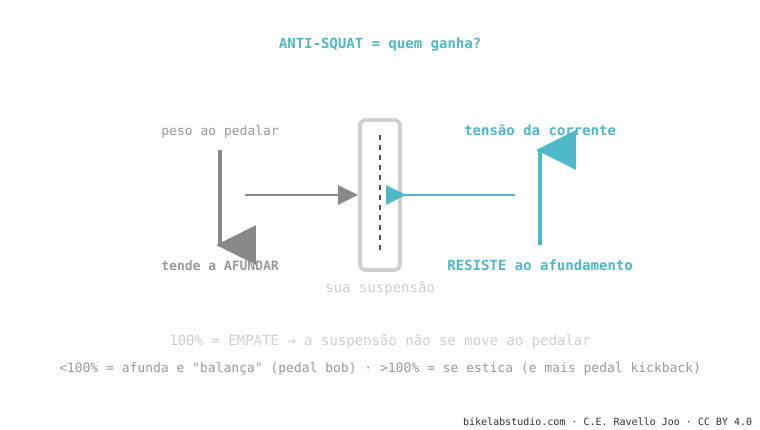

O anti-squat mede o quanto o projeto resiste a que a suspensão afunde ao pedalar. Ao pedalar, o seu peso empurra a traseira para baixo; a tensão da corrente a sustenta. Se o peso ganha (anti-squat baixo), a bike balança: é o pedal bob. Aos 100% é empate: não se move. Mas aumentá-lo tem um preço — o pedal kickback. Faz parte da cinemática de suspensão.
Se a sua bike balança feito cavalinho quando você pedala forte sentado, não é o amortecedor: é a geometria. E tem nome.
Já reparou que algumas bikes balançam para cima e para baixo ao pedalar forte e outras ficam firmes feito uma rocha? Essa diferença não é o amortecedor que põe. É o anti-squat.
Ao pedalar acontecem duas coisas ao mesmo tempo: o seu peso se transfere para trás (tende a afundar a suspensão) e a corrente puxa o balancim (tende a sustentá-la). O anti-squat é, simplesmente, quem ganha esse braço de ferro.

Por isso uma bike com bom anti-squat na zona de sag sobe firme sem que você precise usar o bloqueio o tempo todo. É eficiência "de graça", de fábrica.
Aumentar o anti-squat soa ideal — mas tem contra. Para gerar anti-squat, a corrente tem que puxar com força o balancim, e isso provoca pedal kickback: nas batidas grandes, a corrente estica e chuta os seus pedais para trás. Muito anti-squat = bike muito eficiente subindo, mas com mais kickback e às vezes menos tração no técnico. Não é um número a maximizar: é um equilíbrio que o engenheiro ajusta conforme o propósito da bike.
O anti-squat não é um número só: depende de a qual sag você o mede, da marcha que você usa (a coroa e o pinhão mudam o ângulo da corrente) e do quanto a suspensão está comprimida. Por isso quando uma marca diz "110% de anti-squat", sempre é preciso perguntar: a qual sag e em qual relação de marcha? Sem isso, o número está incompleto.
Anti-squat baixo na zona de sag: o peso afunda a suspensão a cada pedalada (pedal bob).
Empate: a corrente cancela a transferência de peso e a suspensão fica neutra. Não significa "perfeito", só "não afunda nem se estica" naquele ponto.
Não: traz mais pedal kickback e às vezes menos tração. É equilíbrio, não maximizar.
Diga o modelo e como você a sente; te dizemos se é o quadro (anti-squat) ou o ajuste, e o que fazer. Fale com a gente pelo WhatsApp
© 2026 BikeLab Studio. Conteúdo sob CC BY 4.0: você pode copiar, traduzir e publicar, inclusive com fins comerciais. A citação é obrigatória. Sem atribuição, a licença é revogada automaticamente (CC BY 4.0, §6.a) e o uso passa a ser violação de direitos autorais: solicitamos a retirada do conteúdo e sua desindexação. · Design e propriedade: Carlos Ravello Joo